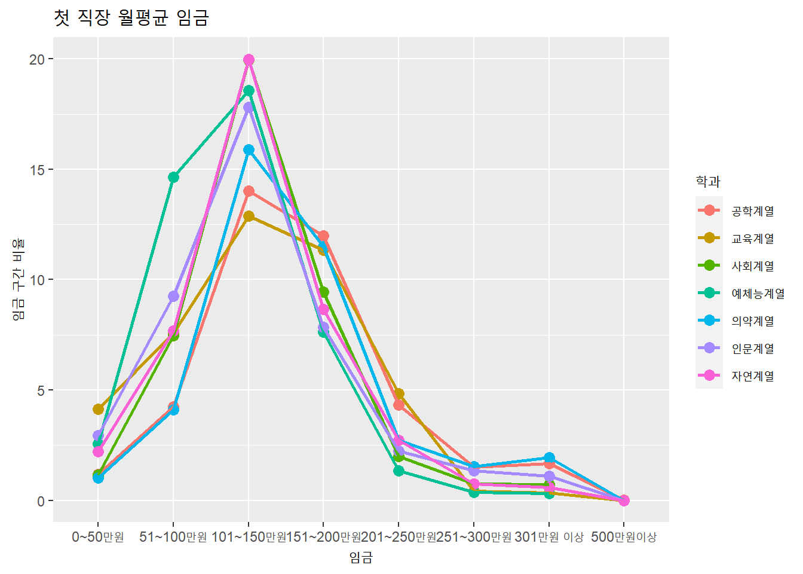
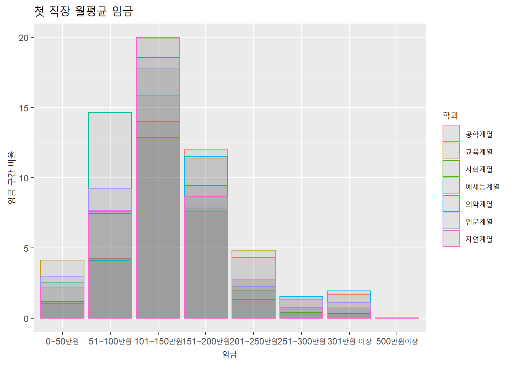
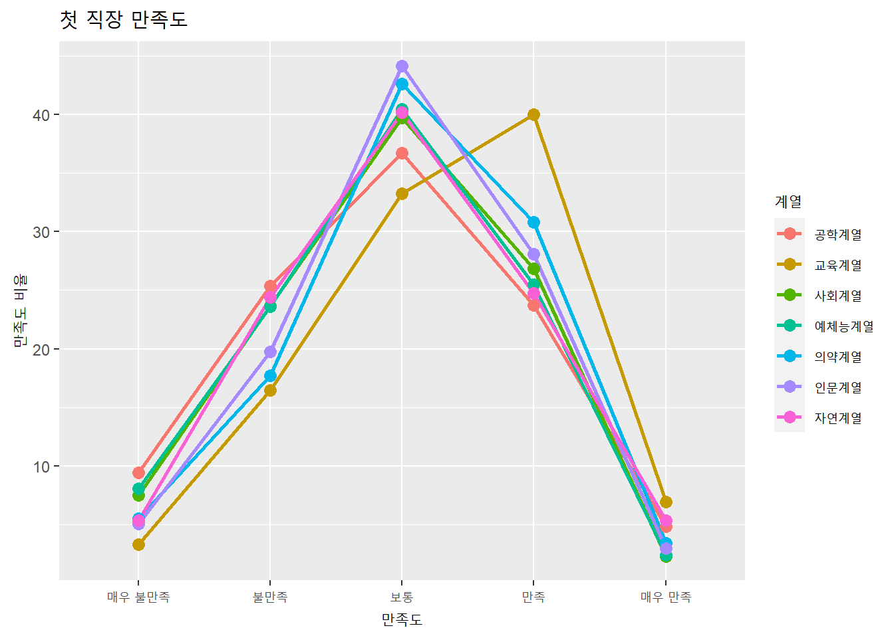
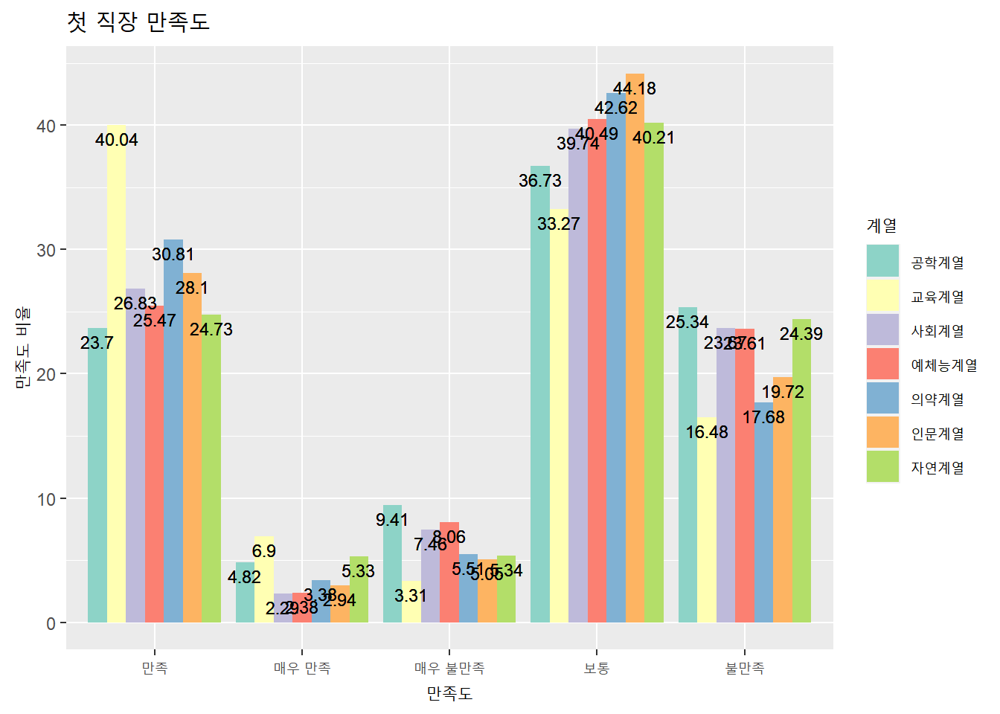
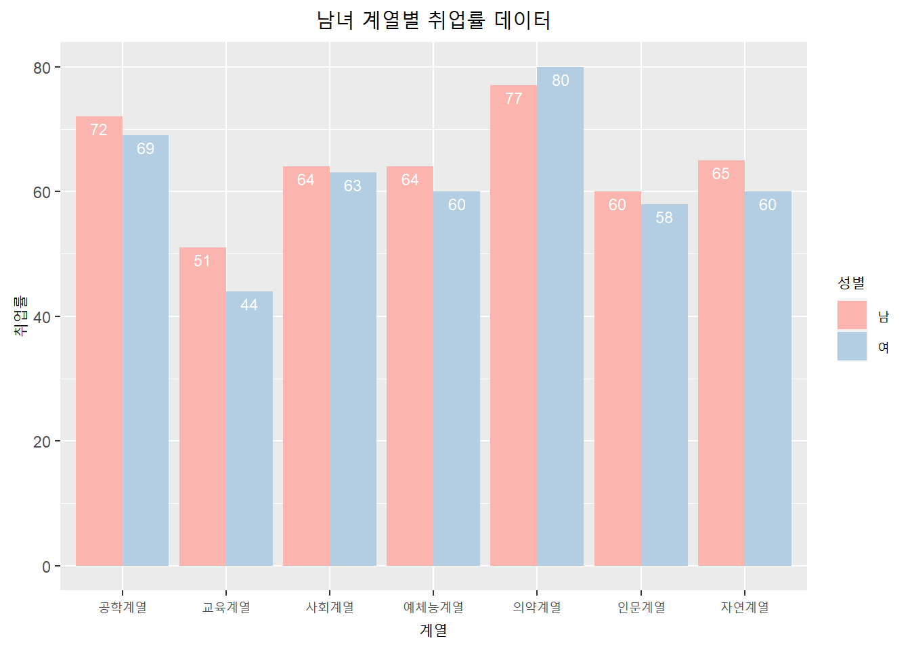
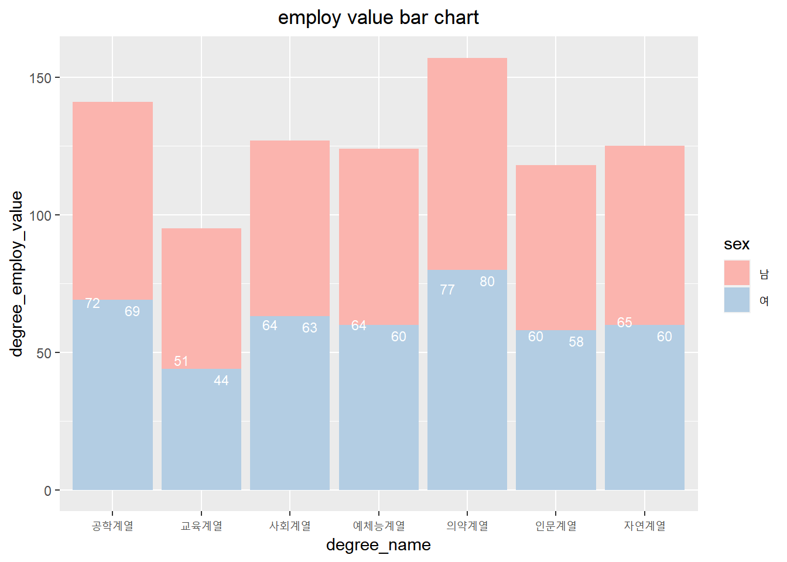
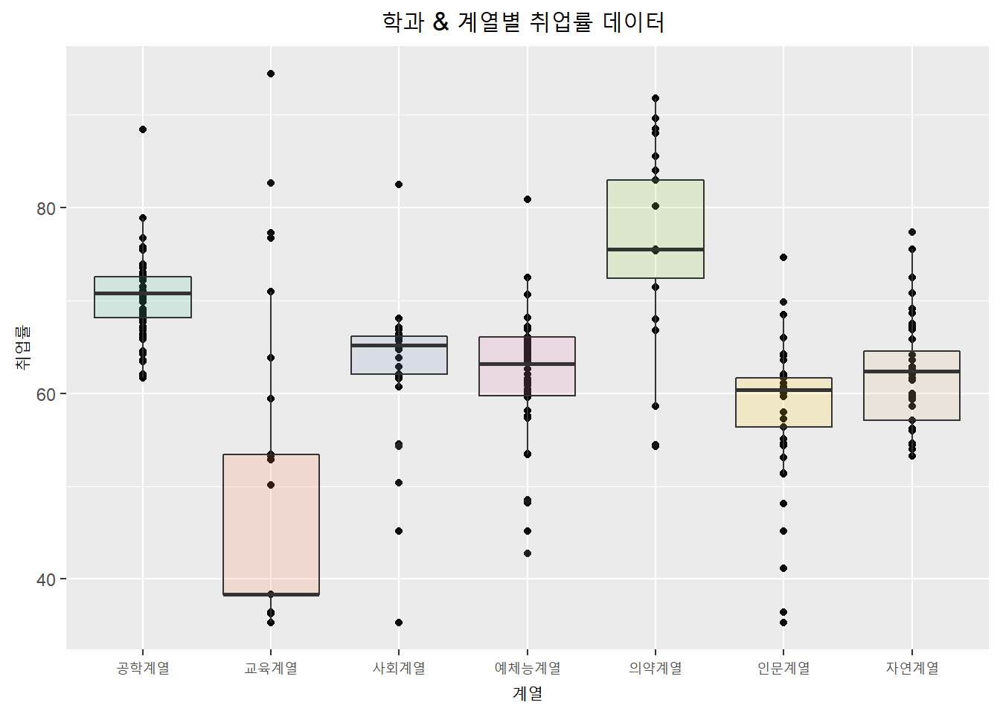
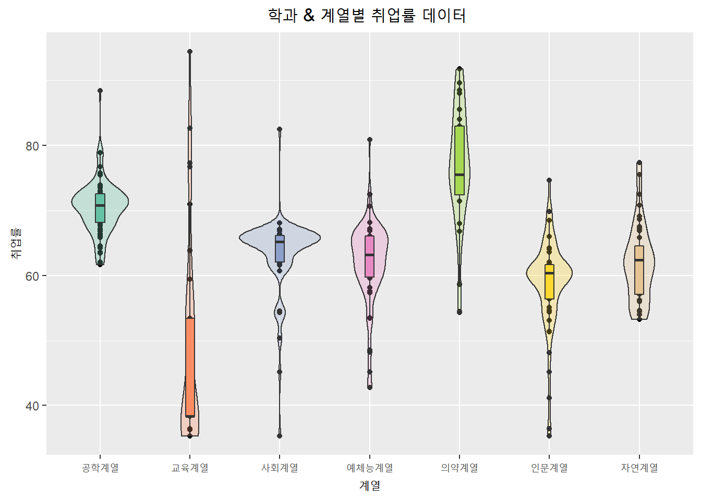

Chapter 3 데이터 분석
Exploratory Data Analysis (EDA)를 포함한 분석 방법과 결과를 자세히 설명한다.
데이터 분석 및 처리 :엑셀로 각 학과 별 취업률 데이터를 평균 데이터로 만들어 Ground 함수를 사용해 정수형 데이터로 변환함
#임금 데이터 시각화(geom_point,geom_line)—-
library(ggplot2)
Sys.setlocale("LC_ALL","C")## [1] "C"salary = read.csv(file = "C:\\Users\\eunhwa\\Documents\\R-capstone\\salary.csv", header = T, sep=",",encoding = "UTF-8")
Sys.setlocale("LC_ALL","Korean")## [1] "LC_COLLATE=Korean_Korea.949;LC_CTYPE=Korean_Korea.949;LC_MONETARY=Korean_Korea.949;LC_NUMERIC=C;LC_TIME=Korean_Korea.949"p<-ggplot(data = salary)+
scale_x_discrete(limits=c("0~50만원", "51~100만원", "101~150만원","151~200만원","201~250만원","251~300만원","301만원 이상","500만원이상")) +
aes(x = salary_name, y = degree_salary_value,color = degree_name, group = degree_name )+
scale_fill_brewer(palette = "Set3")+
geom_point(size = 3,stat="identity")+
geom_line(size=1)
p + labs(title = "첫 직장 월평균 임금",x = "임금", y = "임금 구간 비율",color ="학과")## Warning: Removed 2 rows containing missing values (geom_point).## Warning: Removed 2 row(s) containing missing values (geom_path).
#임금 데이터 시각화(geom_bar)—-
p<-ggplot(salary) +
scale_x_discrete(limits=c("0~50만원", "51~100만원", "101~150만원","151~200만원","201~250만원","251~300만원","301만원 이상","500만원이상")) +
aes(x =salary_name,y =degree_salary_value)+
geom_bar(aes(col=degree_name), position="identity", alpha=0.1,stat ="identity" )
p + labs(title = "첫 직장 월평균 임금",x = "임금", y = "임금 구간 비율",color ="학과")## Warning: Removed 2 rows containing missing values (geom_bar).
#만족도 데이터 시각화(geom_point,geom_line)—-
Sys.setlocale("LC_ALL","C")## [1] "C"satisfaction = read.csv("C:\\Users\\eunhwa\\Documents\\R-capstone\\satisfaction.csv", header = T, sep=",",encoding = "UTF-8")
Sys.setlocale("LC_ALL","Korean")## [1] "LC_COLLATE=Korean_Korea.949;LC_CTYPE=Korean_Korea.949;LC_MONETARY=Korean_Korea.949;LC_NUMERIC=C;LC_TIME=Korean_Korea.949"g<-ggplot(data = satisfaction)+
scale_x_discrete(limits=c("매우 불만족", "불만족", "보통","만족","매우 만족")) +
aes(x = satis_name, y = degree_satis_value,color = degree_name, group = degree_name)+
geom_line(size=1)+
geom_point(size = 3)
g + labs(title = "첫 직장 만족도",x = "만족도", y = "만족도 비율", color="계열")
#만족도 데이터 시각화(geom_bar)——
g<-ggplot(data= satisfaction, aes(fill=degree_name, y=degree_satis_value, x=satis_name)) +
scale_fill_brewer(palette = "Set3")+
geom_bar(position="dodge", stat="identity")+
geom_text(aes(label = degree_satis_value ),vjust = 1.5,position=position_dodge(.9), size=3)
g + labs(title = "첫 직장 만족도",x = "만족도", y = "만족도 비율", fill="계열")
#도지 옵션 넣은 남녀 계열별 취업률 시각화 —-
Sys.setlocale("LC_ALL","C")## [1] "C"female = read.csv(file = "C:\\Users\\eunhwa\\Documents\\R-capstone\\emp_female.csv", header = T, sep=",",encoding = "UTF-8")
Sys.setlocale("LC_ALL","Korean")## [1] "LC_COLLATE=Korean_Korea.949;LC_CTYPE=Korean_Korea.949;LC_MONETARY=Korean_Korea.949;LC_NUMERIC=C;LC_TIME=Korean_Korea.949"ggplot(data = female)+
aes(x = degree_name, y = degree_employ_value,
fill = sex)+
geom_bar(stat="identity",position = "dodge")+
scale_fill_brewer(palette = "Pastel1")+ #팔레트로 색상 지정
theme(plot.title = element_text(hjust = 0.5))+ # 제목 센터로
geom_text(aes(label=degree_employ_value), vjust=1.5,
colour="white",
position=position_dodge(.9),
size=3)+ #그래프에 수치 표시
labs(title = '남녀 계열별 취업률 데이터',
x = '계열',
y = '취업률',
fill = '성별') #레이블 지정 
#dodge 안넣은 버전 취업률 시각화—-
ggplot(data = female)+
labs(title="employ value bar chart")+
aes(x = degree_name, y = degree_employ_value,
fill = sex)+
geom_bar(stat="identity")+
scale_fill_brewer(palette = "Pastel1")+
theme(plot.title = element_text(hjust = 0.5))+
geom_text(aes(label=degree_employ_value), vjust=1.5,
colour="white",position=position_dodge(.9), size=3)
#트리맵을 활용한 취업률 시각화 —
#박스 플롯을 활용한 학과 & 계열별 취업률 시각화 —-
Sys.setlocale("LC_ALL","C")## [1] "C"employ_group = read.csv(file = "C:\\Users\\eunhwa\\Documents\\R-capstone\\employ_group2.csv", header = T, sep=",",encoding = "UTF-8")
Sys.setlocale("LC_ALL","Korean")## [1] "LC_COLLATE=Korean_Korea.949;LC_CTYPE=Korean_Korea.949;LC_MONETARY=Korean_Korea.949;LC_NUMERIC=C;LC_TIME=Korean_Korea.949" ggplot(employ_group,aes(x = group, y = degree_employ_value,fill=group)) +
geom_point(color = "black") + # 점 색상 지정
geom_boxplot(alpha=0.2)+ # 박스플롯 색상 투명도
theme(legend.position="none") + #테마
theme(plot.title = element_text(hjust = 0.5))+ # 제목 센터로
scale_fill_brewer(palette="Set2")+ #팔레트로 색상 지정
labs(title = '학과 & 계열별 취업률 데이터 ',
x = '계열',
y = '취업률') # 레이블과 title 지정 
#바이올린을 활용한 학과 & 계열별 취업률 시각화 —-
ggplot(employ_group,aes(x = group, y = degree_employ_value,fill=group)) +
geom_point(color = "black") + # 점 색상 지정
geom_violin(alpha=0.3) + # 바이올린 색상 투명도
geom_boxplot(width=0.1)+ #박스 플롯 두께
theme(legend.position="none") + #테마
theme(plot.title = element_text(hjust = 0.5))+ # 제목 센터로
scale_fill_brewer(palette="Set2")+ #팔레트로 색상 지정
labs(title = '학과 & 계열별 취업률 데이터 ',
x = '계열',
y = '취업률') # 레이블과 title 지정  # 임금과 만족도 비교—–
p<-ggplot(data = salary)+
scale_x_discrete(limits=c("0~50만원", "51~100만원", "101~150만원","151~200만원","201~250만원","251~300만원","301만원 이상","500만원이상")) +
aes(x = salary_name, y = degree_salary_value,color = degree_name, group = degree_name )+
scale_fill_brewer(palette = "Set3")+
geom_point(size = 3,stat="identity")+
geom_line(size=1)
p + labs(title = "첫 직장 월평균 임금",x = "임금", y = "임금 구간 비율",color ="학과")## Warning: Removed 2 rows containing missing values (geom_point).## Warning: Removed 2 row(s) containing missing values (geom_path).g<-ggplot(data = satisfaction)+
scale_x_discrete(limits=c("매우 불만족", "불만족", "보통","만족","매우 만족")) +
aes(x = satis_name, y = degree_satis_value,color = degree_name, group = degree_name)+
geom_line(size=1)+
geom_point(size = 3)
g + labs(title = "첫 직장 만족도",x = "만족도", y = "만족도 비율", color="계열")